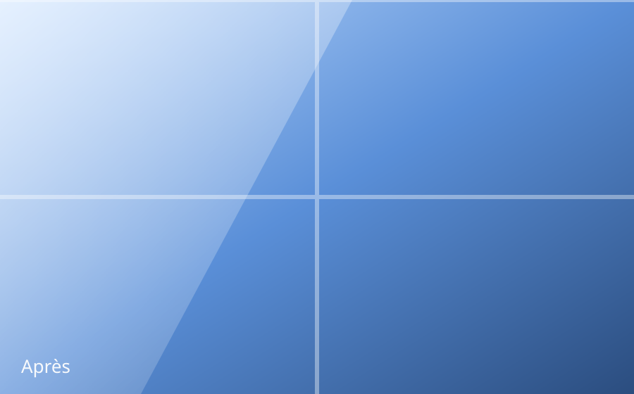
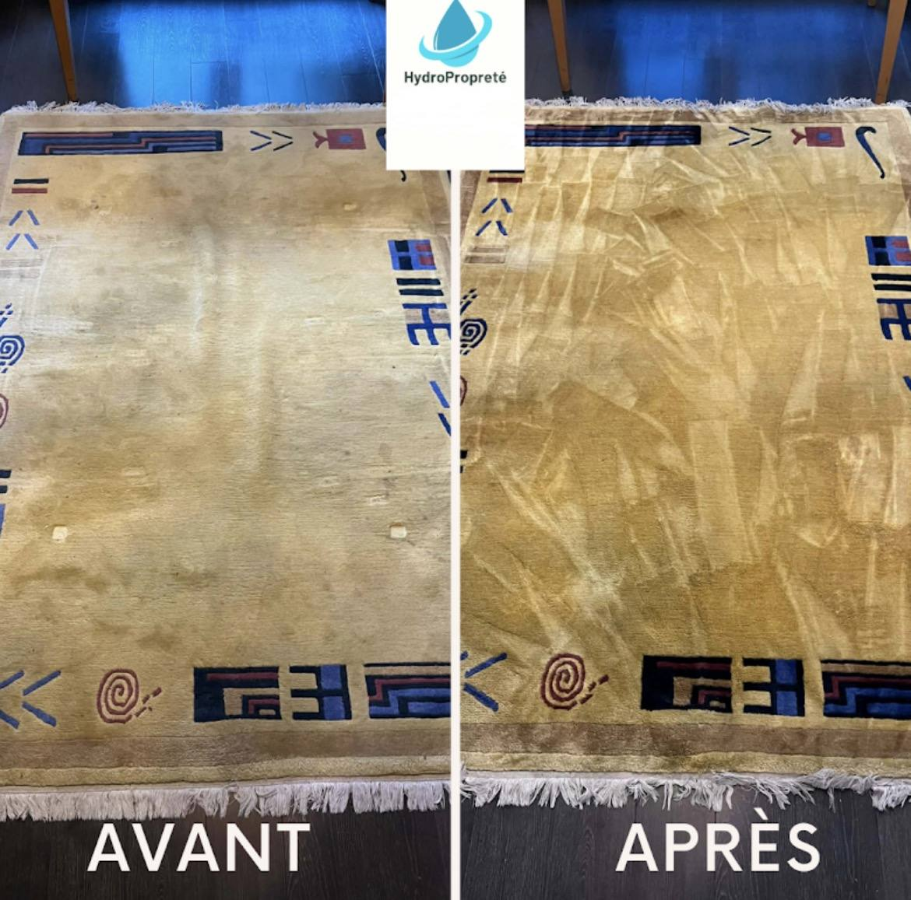

Des vitres impeccables. Des copropriétés entretenues. Un résultat professionnel.
HydroPropreté accompagne les particuliers, professionnels et syndics de copropriété à Pau.
HydroPropreté, votre entreprise de nettoyage à Pau
Une équipe locale, du matériel professionnel et un interlocuteur unique pour tous vos projets de nettoyage.
HydroPropreté est une entreprise de nettoyage à Pau qui accompagne particuliers, professionnels et syndics de copropriété dans l'entretien de leurs biens. Notre équipe intervient sur l'agglomération paloise pour le nettoyage de vitres, l'entretien de copropriété, le nettoyage de canapé, le nettoyage de terrasse, le nettoyage fin de chantier et la remise en état de logement.
Contrairement à un artisan isolé, notre société de nettoyage professionnel s'appuie sur du matériel dédié (eau osmosée, injection-extraction, haute pression) et une organisation en équipe qui garantit la continuité du service, même en cas d'absence. Chaque demande de devis reçoit une réponse sous 24h, sans engagement.
Un savoir-faire pour chaque surface
Six expertises complémentaires, un même niveau d'exigence professionnelle.
Nettoyage de vitres
Vitrages, baies vitrées, vérandas : une transparence parfaite, sans traces.
En savoir plusEntretien copropriété
Parties communes, halls, escaliers : un contrat d'entretien fiable et régulier.
En savoir plus
Nettoyage de canapé
Injection-extraction professionnelle, prix fixe : canapés, fauteuils et matelas retrouvent leur éclat.
En savoir plus
Nettoyage de terrasse
Haute pression et démoussage : dallages, bois et pierre comme neufs.
En savoir plus
Fin de chantier
Livraison impeccable après travaux : poussières, résidus, traces éliminés.
En savoir plus
Remise en état
Logements loués, successions, sinistres : un bien prêt à être rendu ou vendu.
En savoir plusDes tarifs clairs, sans surprise
Nettoyage de canapé, fauteuil et matelas : prix fixe, annoncé avant la réservation. Vitres et copropriétés : sur devis, selon les caractéristiques du chantier.
Nettoyage de canapé 2/3 places
Injection-extraction complète, détachage et désodorisation inclus.
Réserver mon créneauNettoyage de canapé 4/5 places
Injection-extraction complète, détachage et désodorisation inclus.
Réserver mon créneauNettoyage de canapé d'angle
Injection-extraction complète, détachage et désodorisation inclus.
Réserver mon créneauNettoyage de fauteuil
Injection-extraction complète, détachage et désodorisation inclus.
Réserver mon créneauNettoyage de matelas
Injection-extraction complète, détachage et désodorisation inclus.
Réserver mon créneauNettoyage de vitres
Le tarif dépend du nombre de vitres et de leur accessibilité.
Demander un devisEntretien de copropriété
Le tarif dépend de la taille de l'immeuble et de la fréquence souhaitée.
Demander un devisVotre tarif en 10 secondes
Choisissez votre prestation, découvrez le prix et réservez directement votre créneau.
L'exigence professionnelle, la proximité en plus
Une entreprise locale qui traite chaque intervention comme une signature.
Entreprise locale
Basée à Pau, nous connaissons les spécificités du bâti béarnais et de sa météo.
Matériel professionnel
Eau osmosée, perches télescopiques, injection-extraction, haute pression.
Réactivité
Devis sous 24h et interventions planifiées rapidement, y compris en urgence.
Satisfaction client
Contrôle qualité systématique avant chaque fin d'intervention.
Avant / après : un écart qui se voit
Faites glisser le curseur pour comparer un résultat typique HydroPropreté.




Ce que nos clients disent de nous
Avis Google vérifiés, laissés par nos clients à Pau et son agglomération.
« La personne est de bon contact, le travail est soigné et le résultat tel qu'attendu. Il s'agissait du nettoyage d'un matelas. Je recommande ses services. »
« Un canapé taché récupéré comme neuf ! Thomas est super professionnel je recommande sans hésiter ! »
« Très professionnel, canapé, tapis et matelas sont très propres, tout ça dans une ambiance très sympathique. Je recommande. Merci. »
« Thomas est très sympathique et travaille consciencieusement. C'est la 3ème fois que je fais appel à lui et je recommencerai sans hésiter (canapé, sièges voiture, poussette...). »
« Très bonne prestation, Thomas est méticuleux et souriant, je recommande vivement pour la qualité de service. »
« Excellent travail, efficace, rapide et bon rapport qualité prix. »
« Merci à Thomas ! Sympathique, professionnel et efficace... Je recommande ses services. »
Choisir son entreprise de nettoyage à Pau
HydroPropreté est une entreprise locale basée à Pau, équipée de matériel professionnel (eau osmosée, injection-extraction, haute pression) et réactive : un devis gratuit est transmis sous 24h pour tout type de nettoyage, du particulier au syndic de copropriété.
Nous intervenons à Pau ainsi que dans les communes voisines : Billère, Lons, Jurançon, Lescar, Idron et Bizanos.
Remplissez notre formulaire de contact en précisant la prestation souhaitée (vitres, copropriété, canapé, terrasse, fin de chantier ou remise en état) : nous revenons vers vous sous 24h avec un devis gratuit et sans engagement.
Oui, HydroPropreté accompagne aussi bien les particuliers que les professionnels, syndics de copropriété et agences immobilières à Pau.